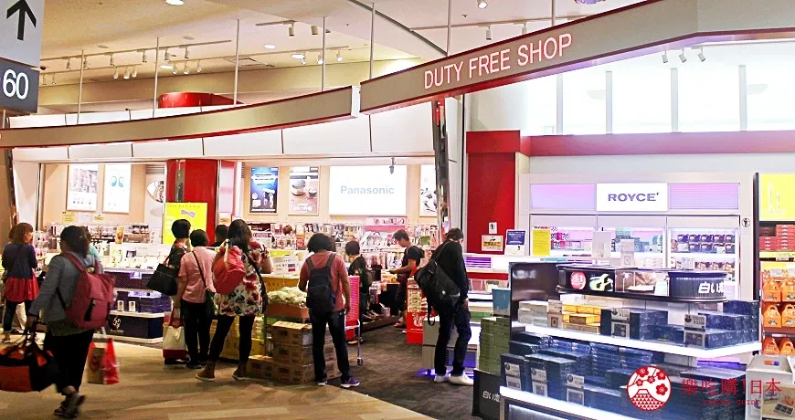

行前出發準備
八、回程搭機
➢ 該提早多久到機場
回程當天應該提早多久抵達機場呢？以回程是從東京成田/羽田、關西國際機場這三大機場來舉例好了，提早2小時到機場，可以不忙不急地完成登機報到、安檢、過海關這些出境流程，然後大約可逛個30分～45分的免稅店，就差不多要去登機門前準備了。
但如果你想要提早到機場去用餐、寄包裹，還需要多一點時間逛免稅店、挑伴手禮的話，提早2小時是絕對不夠的。要注意可能光是走到免稅店、挑商品、排隊結帳就需要花上30分鐘！

➢ 免稅品相關問題